8 Graphical representation
A good graph often reveals more about data than a table of numbers. This chapter shows how to draw the commonly used graphs with base R graphics, and ends with a short introduction to the ggplot2 package. The following graphs are covered:
- Bar plot (bar chart)
- Pie chart
- Histogram and density plot
- Box plot
- Scatter plot and scatter-plot matrix
- Line plot
- Plot of treatment means with error bars
8.1 Bar plot
Suppose we have the maximum temperatures (°C) recorded on seven days:
max.temp <- c(22, 27, 26, 24, 23, 26, 28)A bar plot of the data:
barplot(max.temp)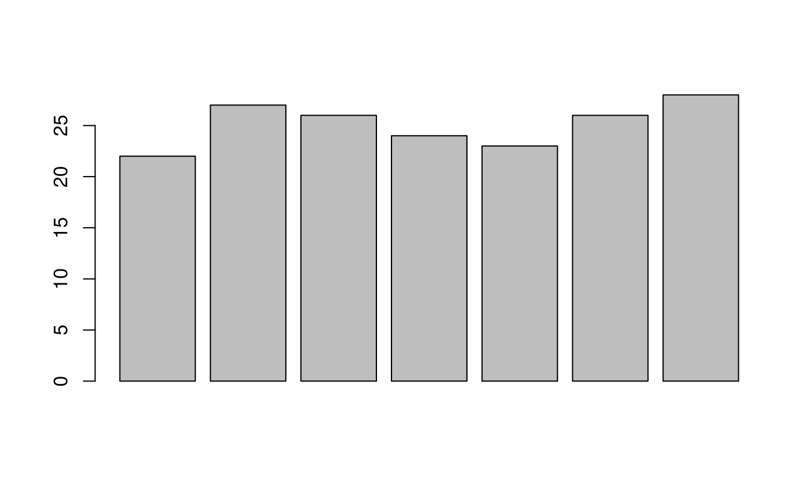
The appearance of the plot is controlled by arguments to barplot(); see the help page with ?barplot. The most often used are:
-
main– the title -
xlab,ylab– axis labels -
names.arg– labels for the bars -
col– colour of the bars -
horiz = TRUE– draw the bars horizontally
# bar chart with added parameters
barplot(max.temp,
main = "Maximum temperatures in a week",
xlab = "Day",
ylab = "Temperature (°C)",
names.arg = c("Sun", "Mon", "Tue", "Wed", "Thu", "Fri", "Sat"),
col = "#F9E79F" # hex colour code
)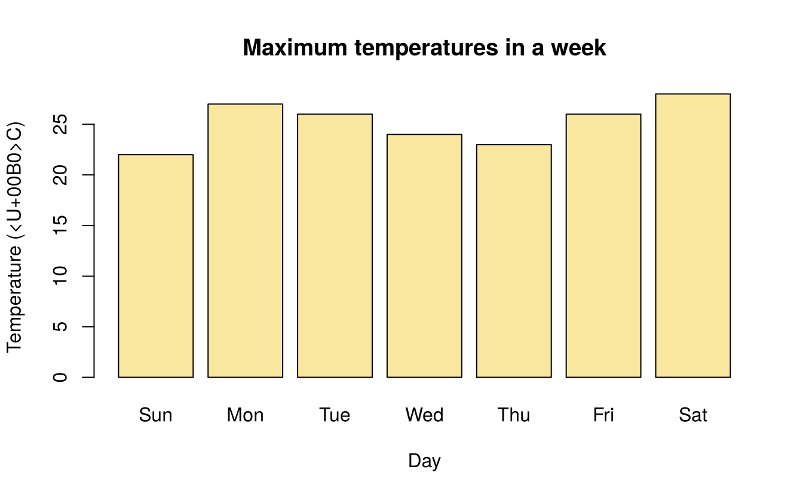
With horiz = TRUE the bars run horizontally, so the axis labels swap roles:
barplot(max.temp,
main = "Maximum temperatures in a week",
xlab = "Temperature (°C)",
ylab = "Day",
names.arg = c("Sun", "Mon", "Tue", "Wed", "Thu", "Fri", "Sat"),
col = "#85C1E9",
horiz = TRUE,
las = 1 # write the day labels horizontally
)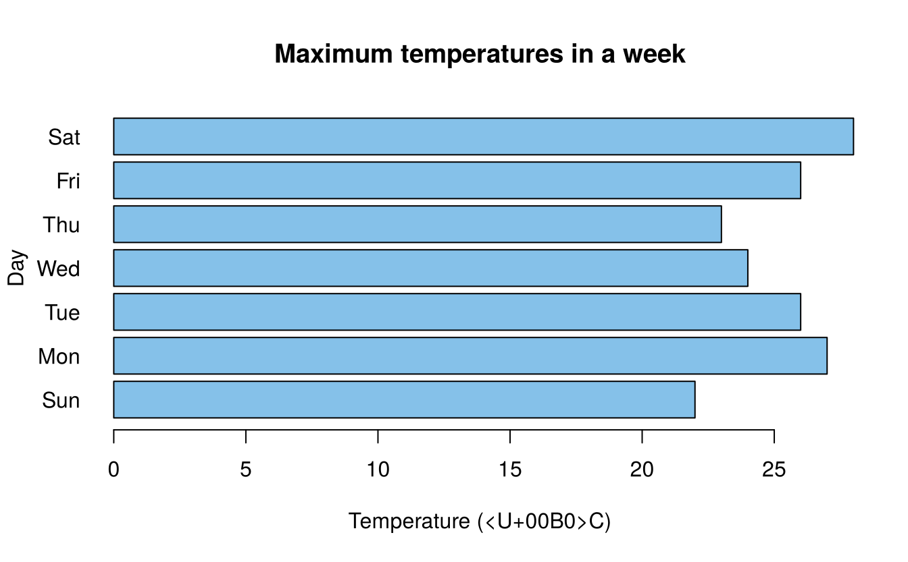
8.1.1 Bar plot of frequencies and grouped bar plot
For a categorical variable, first count the frequencies with table(). A two-way table gives a grouped (or stacked) bar plot. The ToothGrowth data (Chapter 6) records the delivery method (supp) and dose for each animal:
tab <- table(ToothGrowth$supp, ToothGrowth$dose)
tab#>
#> 0.5 1 2
#> OJ 10 10 10
#> VC 10 10 10
barplot(tab,
beside = TRUE, # side-by-side bars; FALSE gives stacked bars
col = c("#E59866", "#76D7C4"),
legend.text = TRUE,
xlab = "Dose (mg/day)", ylab = "Number of animals"
)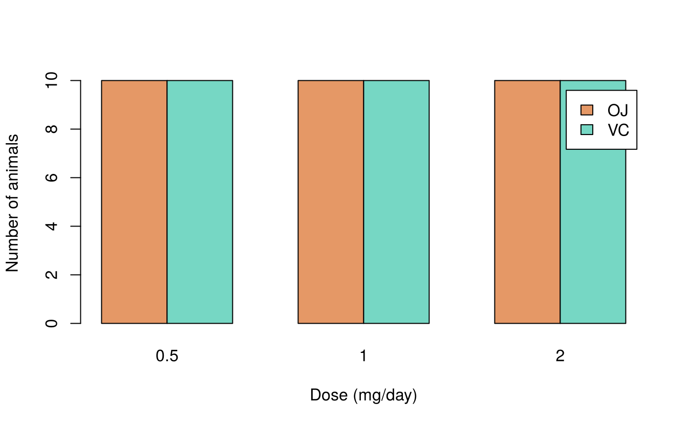
8.1.2 Hex colour codes
Hexadecimal codes are a precise way to specify a colour. When you want your graph to have a particular colour, you give its hex code.

Figure 8.1: Hex codes for colour
A hex colour code starts with a hash symbol (#) followed by six symbols in three pairs. Each pair is a number from 0 to 255 written in base 16 (00 to FF):
- Pair 1: red value
- Pair 2: green value
- Pair 3: blue value
For instance, the RGB value (224, 105, 16) is written #E06910. In all, \(256^3\) (more than 16 million) colours can be specified this way.
Popular hex codes
| Colour | RGB | Hex colour code |
|---|---|---|
| Black | (0, 0, 0) | #000000 |
| Blue | (0, 0, 255) | #0000FF |
| Grey | (128, 128, 128) | #808080 |
| Green | (0, 128, 0) | #008000 |
| Purple | (128, 0, 128) | #800080 |
| Red | (255, 0, 0) | #FF0000 |
| White | (255, 255, 255) | #FFFFFF |
R also accepts 657 colour names such as "steelblue" or "darkgreen" (see colors()), and the function rgb() converts RGB values to a hex code: rgb(224, 105, 16, maxColorValue = 255).
8.1.2.1 How to get hex codes
You can find the hex code of any colour with a colour picker. Copy the hex code and use it in your R code.
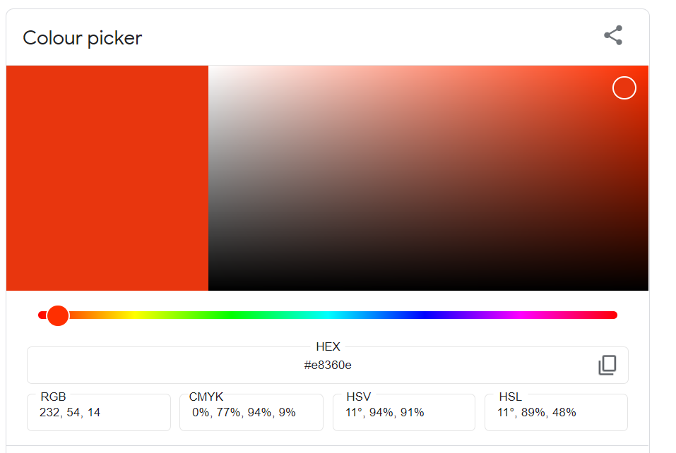
Figure 8.2: Colour picker
8.2 Pie chart
A pie chart shows the share of each category in a whole. The area under five crops in a hypothetical farm (ha):
area <- c(Rice = 12, Coconut = 8, Banana = 5, Vegetables = 3, Pulses = 2)
pct <- round(area / sum(area) * 100, 1)
pie(area,
labels = paste0(names(area), " (", pct, "%)"),
col = c("#F7DC6F", "#82E0AA", "#F0B27A", "#85C1E9", "#D7BDE2"),
main = "Area under crops"
)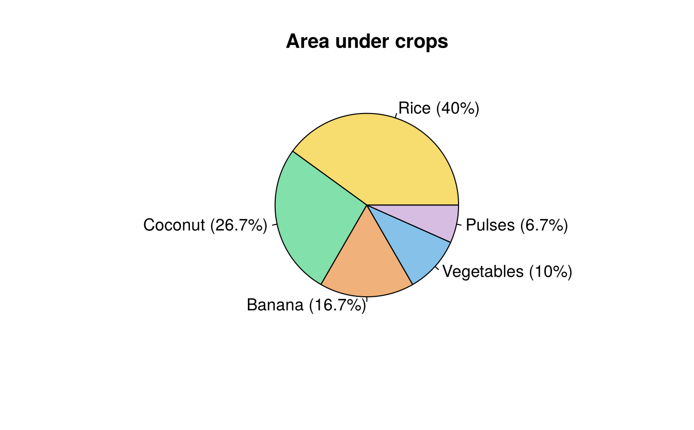
The eye compares lengths better than angles, so a bar plot is usually a better choice than a pie chart, especially when there are more than four or five categories.
8.3 Histogram
A histogram shows the frequency distribution of a continuous variable. The range is split into class intervals (bins) and the height of each bar is the frequency in that class.
hist(iris$Sepal.Length,
main = "Histogram of sepal length",
xlab = "Sepal length (cm)",
col = "#AED6F1", border = "white"
)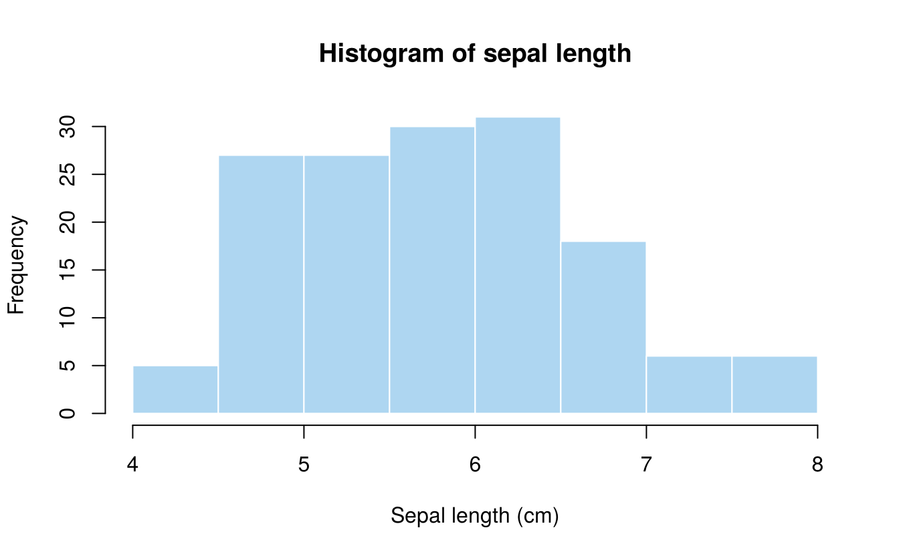
By default R chooses the classes with Sturges’ rule (Chapter 7). The breaks argument sets the number of classes or the actual break points. With freq = FALSE the bars show densities, so a smooth density curve can be overlaid:
hist(iris$Sepal.Length,
breaks = seq(4, 8, by = 0.25), freq = FALSE,
main = "Histogram with density curve",
xlab = "Sepal length (cm)",
col = "#D5F5E3", border = "white"
)
lines(density(iris$Sepal.Length), lwd = 2, col = "darkgreen")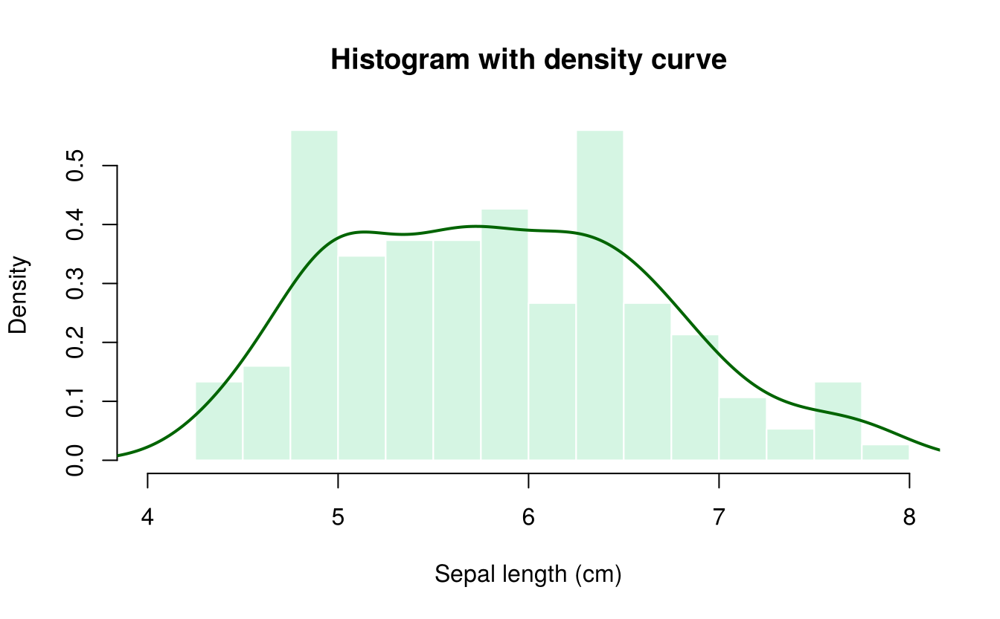
8.4 Box plot
A box-and-whisker plot (box plot) shows the five-number summary of a data set: the minimum, first quartile (\(Q_1\)), median, third quartile (\(Q_3\)) and maximum, and it flags possible outliers.
8.4.1 Anatomy of a box plot
Figure 8.3 shows the parts of a box plot.
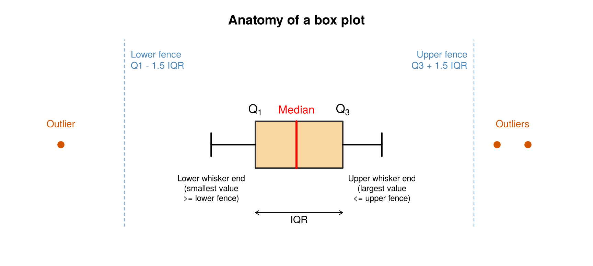
Figure 8.3: Anatomy of a box plot. Whiskers end at the most extreme observations inside the fences; points beyond the fences are outliers.
- Box: drawn from \(Q_1\) to \(Q_3\), so it contains the middle 50% of the data. Its length is the interquartile range, \(\text{IQR} = Q_3 - Q_1\).
- Median: the line inside the box.
- Fences: the limits \(Q_1 - 1.5 \times \text{IQR}\) (lower fence) and \(Q_3 + 1.5 \times \text{IQR}\) (upper fence). The fences are not drawn in a box plot (they are shown dashed in Figure 8.3 only for explanation).
- Whiskers: the lower whisker extends from the box to the smallest observation that is greater than or equal to the lower fence; the upper whisker extends to the largest observation that is less than or equal to the upper fence. If there are no outliers, the whiskers reach the minimum and maximum of the data.
- Outliers: observations beyond the fences, plotted as individual points.
A common mistake is to say that the whisker ends at \(Q_1 - 1.5 \times \text{IQR}\). The fence is only a cut-off; the whisker always ends at an actual data value.
R computes the quartiles for the box with Tukey’s “hinges”, which can differ slightly from quantile() in small samples. boxplot.stats() returns the values used:
x <- c(2, 4, 5, 5, 6, 7, 7, 8, 9, 25)
boxplot.stats(x)#> $stats
#> [1] 2.0 5.0 6.5 8.0 9.0
#>
#> $n
#> [1] 10
#>
#> $conf
#> [1] 5.001 7.999
#>
#> $out
#> [1] 25The $stats component gives the lower whisker end, lower hinge, median, upper hinge and upper whisker end. The value 25 lies beyond the upper fence and is reported in $out as an outlier.
8.4.2 Drawing box plots
boxplot(x, horizontal = TRUE, col = "#FAD7A0",
main = "Box plot with an outlier", xlab = "Value")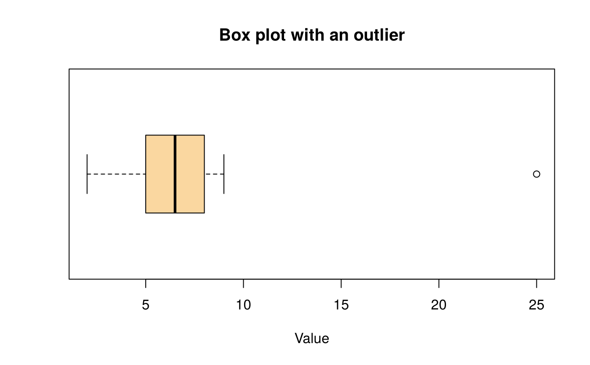
Box plots are most useful for comparing groups. A formula y ~ group draws one box per group:
boxplot(Sepal.Length ~ Species,
data = iris,
col = c("#F5B7B1", "#A9DFBF", "#AED6F1"),
xlab = "Species", ylab = "Sepal length (cm)",
main = "Sepal length of three Iris species"
)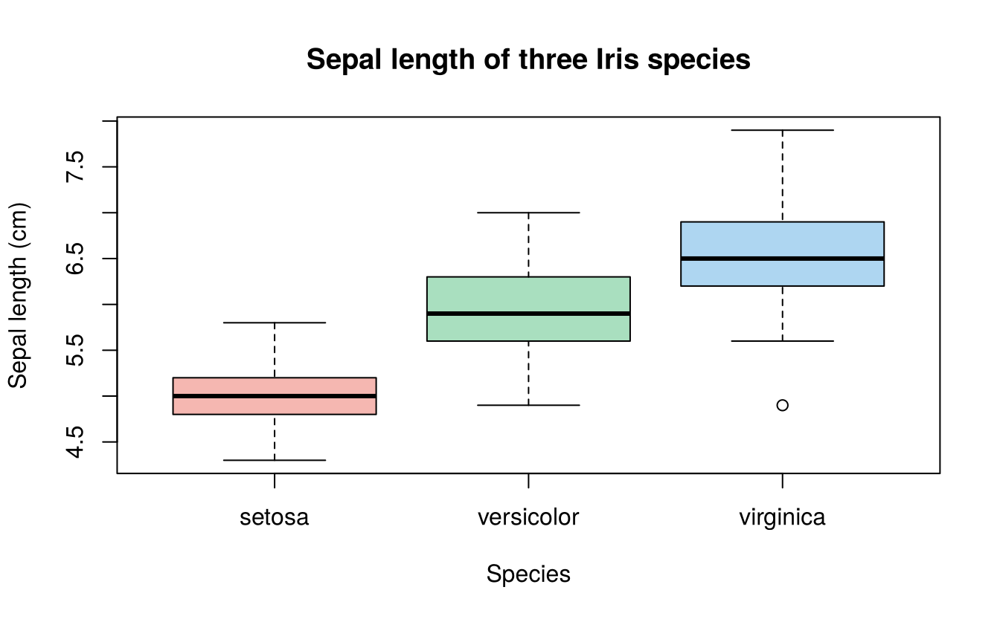
8.5 Scatter plot
A scatter plot shows the relationship between two continuous variables.
plot(Petal.Width ~ Petal.Length,
data = iris,
pch = 19, # solid circles
col = c("tomato", "seagreen", "steelblue")[iris$Species],
xlab = "Petal length (cm)", ylab = "Petal width (cm)",
main = "Petal width against petal length"
)
legend("topleft", legend = levels(iris$Species),
col = c("tomato", "seagreen", "steelblue"), pch = 19, bty = "n")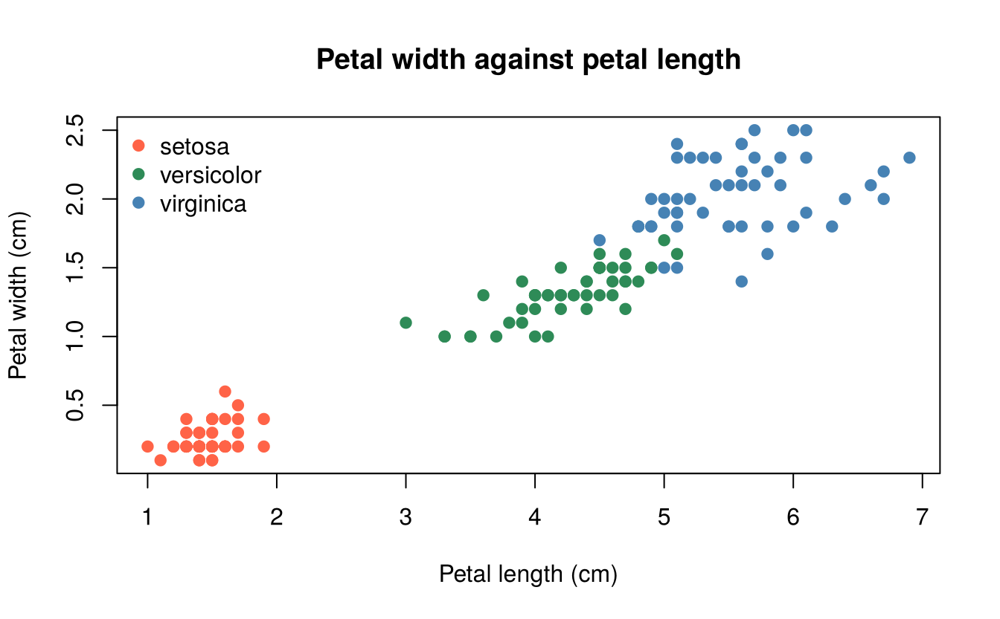
pairs() draws a scatter-plot matrix: a scatter plot for every pair of variables.
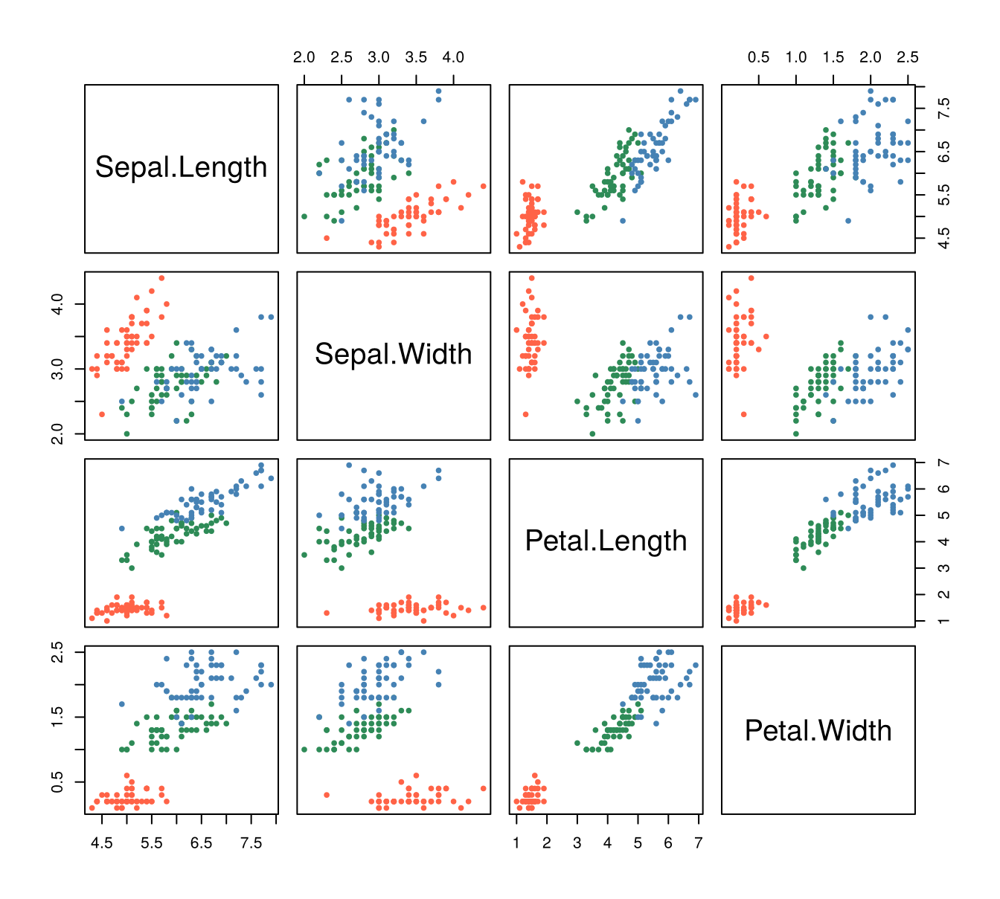
8.6 Line plot
A line plot joins points in order and is used for data collected over time or over increasing levels of a factor. The built-in Nile data give the annual flow of the river Nile:
plot(Nile, type = "l", col = "navy", lwd = 2,
xlab = "Year", ylab = "Annual flow (10^8 m^3)",
main = "Flow of the river Nile, 1871–1970")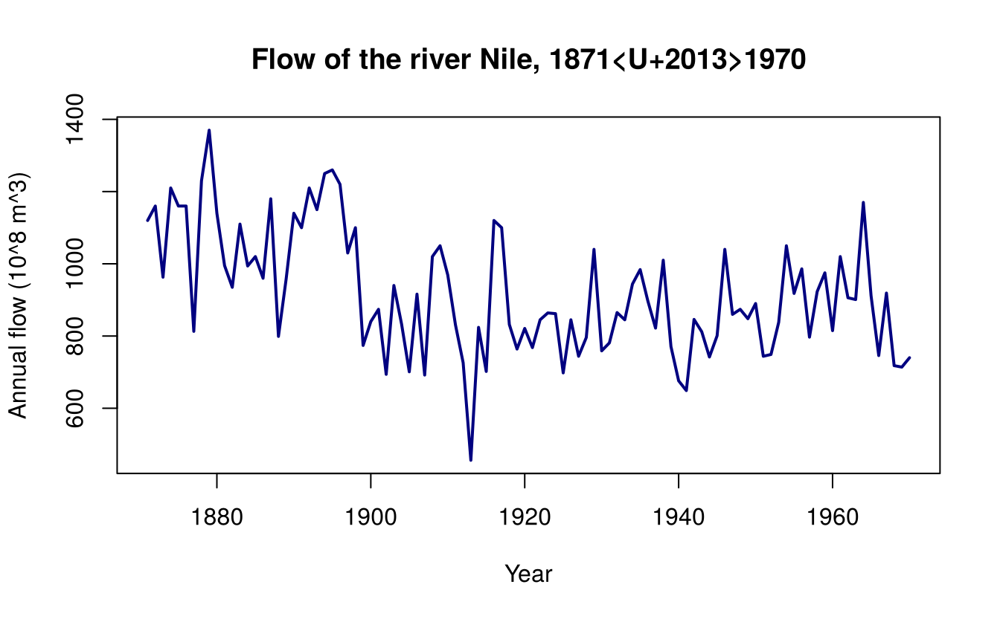
The argument type controls what is drawn: "p" points, "l" lines, "b" both, "h" vertical lines.
8.7 Treatment means with error bars
Results of experiments are often presented as treatment means with error bars of ± one standard error (SE). Using the PlantGrowth data:
m <- tapply(PlantGrowth$weight, PlantGrowth$group, mean)
se <- tapply(PlantGrowth$weight, PlantGrowth$group,
function(x) sd(x) / sqrt(length(x)))
bp <- barplot(m, ylim = c(0, max(m + se) * 1.15),
col = "#A9CCE3", ylab = "Dried weight of plants (g)",
xlab = "Treatment", main = "Mean (± SE) plant weight")
arrows(bp, m - se, bp, m + se, angle = 90, code = 3, length = 0.08)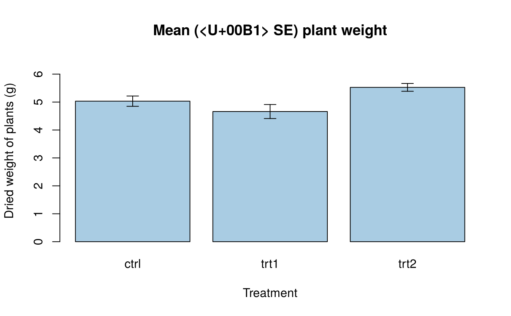
8.8 Saving a graph
In RStudio, click Export in the Plots pane. In code, open a graphics device, draw the plot and close the device with dev.off():
png("boxplot.png", width = 1600, height = 1200, res = 300) # 300 dpi
boxplot(Sepal.Length ~ Species, data = iris)
dev.off()Use pdf(), jpeg() or tiff() in the same way. Journals usually ask for TIFF or PDF at 300 dpi or more.
8.9 A brief introduction to ggplot2
The ggplot2 package builds graphs in layers following the “grammar of graphics”: you map variables to aesthetics (x, y, colour) and add geometric layers (points, bars, boxes). Many researchers prefer it for publication graphics.
library(ggplot2)
ggplot(iris, aes(x = Species, y = Sepal.Length, fill = Species)) +
geom_boxplot(show.legend = FALSE) +
labs(x = "Species", y = "Sepal length (cm)") +
theme_bw()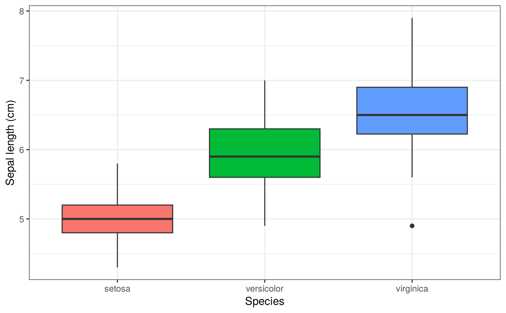
ggplot(iris, aes(x = Petal.Length, y = Petal.Width, colour = Species)) +
geom_point() +
geom_smooth(method = "lm", se = FALSE) +
labs(x = "Petal length (cm)", y = "Petal width (cm)") +
theme_bw()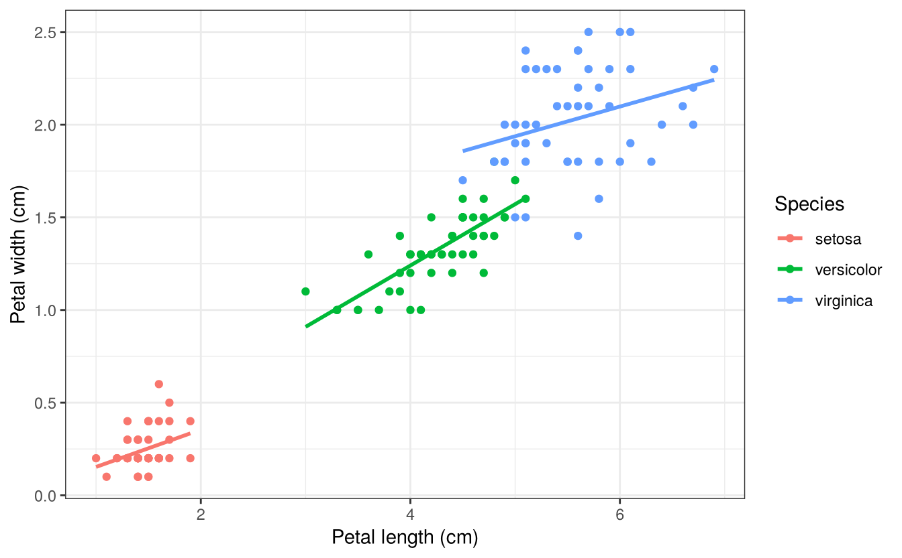
Exercises
- Draw a bar plot of the mean yield of each virus treatment in the
sweetpotatodata (agricolae), with error bars of ± SE. - Draw a histogram of
Petal.Lengthiniris. Why does it have two peaks? - Draw side-by-side box plots of
lenfor eachdoseinToothGrowth. Are there any outliers? - Draw a scatter plot of
mpgagainstwtinmtcarsand describe the relationship.